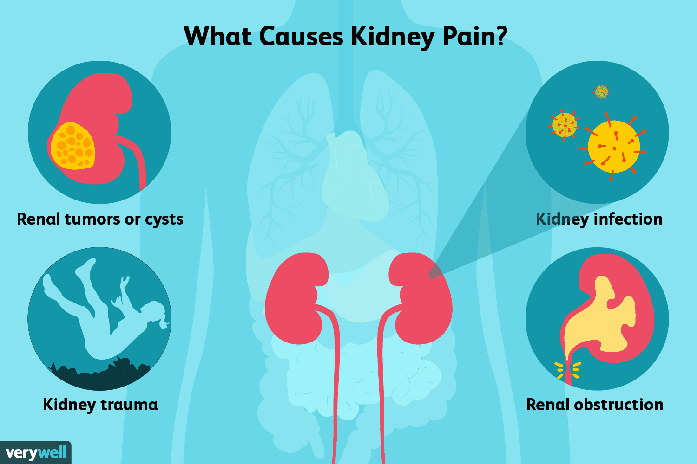

KIDNEY INFECTION

- Kidney disease requires more attention in the diet than other diseases.
- Diet is essential. Ignoring it can lead to kidney failure and life threatening.
- To date there are no drugs to cure kidney failure.
- It can only delay the severity of the disease.
- Therefore, no room should be left for anything that could endanger the kidneys.
- It is necessary to drink two to two and a half liters of water daily. This should not be forgotten no matter how much work and workload.
- In case of loss of kidney function, drink only the amount prescribed by the doctor.
- Vegetables like bananas, plantains, radishes, barley and cucumbers should be included in the diet three or four days a week to help urinate well.
- Are you approaching 40? It is better to avoid too much salt.
- Too much salt can cause difficulty with kidney function.
- People with kidney disease need to get the right amount of water, protein, sodium and potassium salts, and iron in their diet.
- The doctor will prescribe the amount of water to drink depending on the amount of urine excreted from the body.
- It should follow as it is. The amount of salt you should take should depend on the amount of salt that comes out of your blood and urine.
- Pineapple, papaya and guava are low in potassium. You can eat these Carrots, beetroot, cauliflower, spinach and lentils are high in sodium.
- These should also be avoided in the diet.
- Vegetables and greens should be drained a lot, boiled well and then drained and eaten.
- This type of cooking will prevent you from staying high in salt.